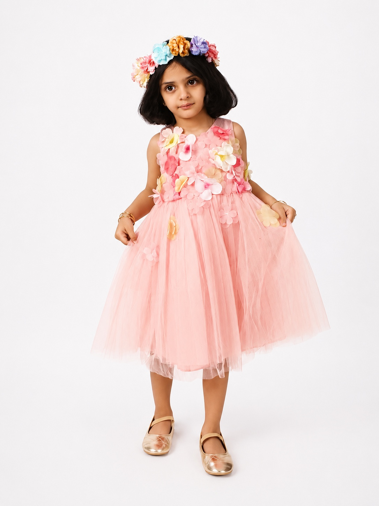

الواجهة الرئيسية
Hero بصورة طفلة مبهجة، عنوان أزرق، زر رئيسي وردي، وبطاقات ثقة
منصة متكاملة لفهم نمط تحفيزك وتنمية الوعي الذاتي
افهم نمطك السلوكي والتحفيزي وعاداتك اليومية، واخرج بخطوة عملية واحدة على الأقل — بلغة ودودة ومطمئنة.
نحو حياة أكثر اتزانًا وسعادة

مرحبًا بك في دندونة
سجّل دخولك لبدء رحلتك نحو التوازن والسعادة
ليس لديك حساب؟ إنشاء حساب جديد
لماذا دندونة؟
مقاييس مصمّمة لقياس مؤشرات التوازن التحفيزي والسلوكي بدقة.
خطط شخصية بناءً على نتائجك واحتياجاتك اليومية.
مقالات وأدوات من خبراء، مراجَعة علميًا ولغويًا.
ركن الطمأنينة الاختياري يدعم بناء العادة دون حكم على الإيمان.
تسجيل الدخول (Auth)
بطاقة بيضاء هادئة في المنتصف مع الشعار، دخول عبر Google وApple ثم البريد
أهلًا بعودتك 🌸
سجّل دخولك لمتابعة رحلتك مع دندونة
بتسجيل الدخول فأنت توافق على سياسة الخصوصية وشروط الاستخدام.
للقُصّر: يلزم موافقة ولي الأمر قبل بدء أي اختبار.
التهيئة الأولية (Onboarding)
اللغة، تعريف مختصر بالمنصة، وقبول التوجيه العام قبل البدء
أهلًا بك في دندونة 🌸
دندونة تساعدك على فهم نمطك التحفيزي وعاداتك اليومية، وتقدّم لك خطوة عملية بلغة مطمئنة — دون تشخيص طبي.
إعداد الملف الشخصي
العمر، الجنس، الفئة، نمط الاستخدام، وتفضيل ركن الطمأنينة
الموافقة والخصوصية
الخصوصية والإخلاء وموافقة ولي الأمر عند الحاجة قبل بدء الاختبار
قبل أن نبدأ
اختيار الاختبار
سريع، تفصيلي، أو مقاييس متخصّصة حسب العمر والفئة
الاختبار السريع
صورة عامة عن نمطك في أقل من ٥ دقائق.
الاختبار التفصيلي
مؤشر عام + خمسة مؤشرات فرعية دقيقة.
مقاييس متخصّصة
التشتّت الرقمي، النوم والطاقة، السوشال ميديا…
شاشة السؤال
سؤال واحد، خيارات ليكرت، شريط تقدّم، حفظ تلقائي، وتخطٍّ للأسئلة الحسّاسة
تُحفظ كل إجابة فور اختيارها؛ يمكنك المتابعة لاحقًا من حيث توقّفت دون فقدان تقدّمك.
يظهر زر «تخطّي» للأسئلة ذات الحساسية المتوسطة أو العالية، دون التأثير على اكتمال الاختبار.
على الجوال يُعرض سؤال واحد فقط لتقليل التشتّت، مع شريط تقدّم واضح.
النتيجة
درجة عامة، مؤشرات فرعية، تفسير، ومخطط راداري وردي — دون لغة تشخيصية
٠–٤٠
٤١–٦٠
٦١–١٠٠
المؤشرات الفرعية
تظهر لديك مؤشرات مرتفعة في التشتّت الرقمي والبحث عن التحفيز السريع. هذه نتيجة إرشادية وليست تشخيصًا. ابدئي بخطة ٧ أيام لتقليل فرط التحفيز وتنظيم اليوم.
الخطة والتحديات
خطة ٧ أيام و٣٠ يومًا كقائمة مهام بدوائر اكتمال، وتحديات بأشرطة تقدّم هادئة
مهام بسيطة تُبنى تدريجيًا. عودي بهدوء إن تعثّرتِ، دون جلد للذات.
أنجزتِ ٤ من ٧ مهام — استمري 🌸
تحدياتي
لا يزيد على ٣–٤ تحديات يوميًا، بأشرطة تقدّم هادئة بلا مكافآت مبالغة.
لوحة المستخدم (Desktop)
تحية شخصية، بطاقات قياس، توصيات مخصّصة، وبطاقة ركن الطمأنينة
مرحبًا دانة 👋
كيف تشعرين اليوم؟
توصيات مخصّصة لك
واجهة الجوال (Mobile Home)
نتيجة رئيسية + مؤشران + تقدّم اليوم، وتنقّل سفلي بأزرار كبيرة
أنجزتِ معظم مهام اليوم، خطوة صغيرة تكفي 🌸
سؤال واحد في الشاشة، حفظ تلقائي بعد كل إجابة، وأزرار لا يقل ارتفاعها عن ٤٤px مناسبة للإبهام.
خمسة عناصر فقط: الرئيسية، التقرير، برنامجي، تحدياتي، الحساب — بلا مؤثرات ألعاب أو مكافآت مفرطة.
رسائل قصيرة غير تأنيبية تدعم الاستمرار: «خطوة صغيرة تكفي»، «عودي بهدوء».
ركن الطمأنينة
محتوى قيمي اختياري بتدرّج وردي ثلجي وزخرفة خفيفة — لا يقيس الإيمان
لحظة هدوء قصيرة تربط تنظيم يومك بمعنى أعمق — دون إلزام أو تأنيب.
نعمة الفراغ وتقليل الهدر الرقمي بخطوة صغيرة.
مواد قصيرة وتمارين هدوء تقلّل التشتّت.
العناية بالنوم والجسد باعتبارها شكرًا عمليًا.
التقارير
تحسّن المؤشرات بخط أزرق وأشرطة وردية، بلغة مطمئنة، وتصدير PDF بإخفاء الحساسة
متوسط مؤشر التوازن التحفيزي
هذا الشهرتحسّن في الجوانب
نعرض التحسّن لا «المشكلات» — كل خطوة تُحتسب.
الخصوصية والبيانات
تصدير، حذف، إدارة الموافقات، والتحكّم في المشاركة
التحكّم في بياناتك
سجل موافقاتي
بوابة الطفل / المراهق
تجربة مبسّطة وأسئلة مناسبة ورسائل آمنة دون نتائج مخيفة
مرحبًا يا بطل! 🌟
رحلة لطيفة لتفهم عاداتك وتصبح أكثر توازنًا — بخطوات صغيرة وممتعة.
أسئلة بسيطة بصور، سؤال واحد في كل مرة.
خطوة صغيرة واحدة تكفي: العب، تحرّك، ثم استرح.
لا كلمات مخيفة، ورسائل تشجّعك بلطف.
بوابة ولي الأمر
موافقة ومتابعة عامة وتوصيات أسرية — دون تفاصيل حسّاسة
لوحة ولي الأمر
تابع مؤشرات أبنائك العامة، واعتمد المشاركة، واطّلع على توصيات أسرية داعمة.
الأبناء المرتبطون
مؤشرات عامة فقط دون تفاصيل الإجابات.
توصيات أسرية
خطوات لطيفة تدعمها كأسرة.
بوابة المختص
نتائج بتفويض صريح، وملاحظات، ومتابعة، وسجل تفويضات
لوحة المختص
تطّلع فقط على نتائج مفوّضة صراحةً من المستخدم أو ولي الأمر، مع أدوات متابعة وملاحظات.
| المستفيد | المؤشر العام | حالة التفويض | آخر متابعة | إجراء |
|---|---|---|---|---|
| مستخدم #A-2291 | مرتفع | مفوّض | 03/07/2026م | |
| مستخدم #A-2288 | متوسط | مفوّض | 01/07/2026م | |
| مستخدم #A-2305 | — | بانتظار التفويض | — |
بوابة المؤسسة التعليمية
مؤشرات جماعية مجهولة الهوية وتوصيات برامج — دون أي بيانات فردية
مدرسة دانة النموذجية
مؤشرات رفاه رقمي جماعية مجهولة، ومتوسطات، وتوصيات برامج للطلاب.
توزّع المؤشر حسب الصفوف
مجهول الهويةتوصيات برامج
مبادرات جماعية لا فردية.
بوابة الشركات
مؤشرات رفاه رقمي مجهولة وتوصيات بيئة عمل — دون أسماء أو استخدام تمييزي
لوحة رفاه الموظفين
مؤشرات عامة مجهولة الهوية لدعم بيئة عمل أكثر توازنًا رقميًا.
جوانب بيئة العمل
توصيات بيئة العمل
لوحة الإدارة (Super Admin)
أعداد المستخدمين والاختبارات والتنبيهات والأخطاء ونظرة عامة على النظام
نظرة عامة
الاختبارات المكتملة
آخر ٣٠ يومًاتنبيهات وأخطاء
إدارة المستخدمين
بحث، إيقاف، أدوار، وطلبات بيانات
المستخدمون
| المعرّف | الدور | الفئة | الحالة | آخر دخول | إجراء |
|---|---|---|---|---|---|
| #A-2291 | مستخدم فردي | بالغ | نشط | اليوم | |
| #M-1180 | قاصر | مراهق | بانتظار ولي الأمر | أمس | |
| #S-0044 | مختص | — | نشط | 03/07/2026م | |
| #A-2140 | مستخدم فردي | بالغ | موقوف | 25/06/2026م |
إدارة المقاييس
إنشاء، نسخ، اعتماد، ونشر مقاييس جديدة دون تدخّل المطوّر
المقاييس
| المقياس | الفئة | الأسئلة | الإصدار | الحالة |
|---|---|---|---|---|
| التوازن التحفيزي العام | كل المستخدمين | ٢٠–٣٥ | v2.1 | منشور |
| التشتّت الرقمي | مراهق/بالغ | ١٢–٢٠ | v1.4 | منشور |
| النوم والطاقة | كل المستخدمين | ٨–١٢ | v1.0 | قيد الاعتماد |
| البُعد القيمي والإيماني | اختياري | ١٠–٢٠ | v0.9 | مسودة |
بنك الأسئلة
إضافة، تصنيف، وزن، ومراجعة — بدورة حياة كاملة لكل سؤال
الأسئلة
| نص السؤال | المحور | النوع | الوزن | الحساسية | الحالة |
|---|---|---|---|---|---|
| عندما أشعر بالملل أفتح الجوال دون هدف | التشتّت الرقمي | مباشر | 1.0 | عادي | منشور |
| أجد صعوبة في تأجيل المتعة حتى أنجز مهمة | المكافأة السريعة | مباشر | 1.2 | عادي | منشور |
| أستخدم الصلاة كنقطة لتنظيم يومي | البُعد القيمي | عكسي | 1.0 | متوسط | مراجعة شرعية |
محرّك الدرجات
حدود النتيجة (Bands)، الأسئلة العكسية (Reverse)، والأعلام (Flags)
حدود النتيجة والأعلام
| المدى | الوصف | الرسالة |
|---|---|---|
| ٠–٢٠ | توازن جيد | مؤشراتك مستقرة غالبًا. استمر في العادات النافعة |
| ٢١–٤٠ | مؤشرات بسيطة | توجد نقاط صغيرة قابلة للتحسين |
| ٤١–٦٠ | مؤشرات متوسطة | قد تستفيد من خطة تنظيم عادات خلال أسبوعين |
| ٦١–٨٠ | مؤشرات مرتفعة | تحتاج خطوات عملية لتقليل فرط التحفيز |
| ٨١–١٠٠ | مؤشرات عالية | ننصح بخطة متابعة، والتواصل مع مختص إذا أثّرت على حياتك |
نموذج ليكرت (مباشر/عكسي)
الأعلام (Flags)
تُفعَّل تلقائيًا عند تجاوز عتبات محددة، وكلها قابلة للتهيئة من اللوحة.
محرّك التوصيات
ربط النتائج بالمحتوى والخطط بقواعد قابلة للتعديل
قواعد التوصيات
| الشرط | التوصية | المحتوى المرتبط | ركن الطمأنينة |
|---|---|---|---|
| distraction ≥ 70 | تقليل الإشعارات وتحدي ١٠ دقائق بلا جوال | كيف أستعيد انتباهي؟ | الذكر وهدوء القلب |
| procrastination ≥ 65 | مهمة واحدة بعد بداية اليوم | قاعدة ١٠ دقائق | حفظ الوقت ونعمة الفراغ |
| sleep_energy ≥ 60 | إبعاد الجوال قبل النوم | نومك وطاقة يومك | شكر نعمة الجسد |
| reward ≥ 70 | تأجيل المكافأة حتى الإنجاز | المتعة السريعة والإنجاز | مجاهدة الهوى بلغة عملية |
المراجع الشرعية
آيات وأحاديث ومصدر ودرجة واعتماد شرعي قبل النشر
النصوص الشرعية
| النص | النوع | المصدر | الدرجة | الاعتماد |
|---|---|---|---|---|
| «ألا بذكر الله تطمئنّ القلوب» | آية | الرعد · ٢٨ | قطعي | معتمد |
| «وتعاونوا على البِرِّ والتقوى…» | آية | المائدة · ٢ | قطعي | معتمد |
| «احرص على ما ينفعك…» | حديث | صحيح مسلم | صحيح | قيد المراجعة |
إدارة المؤسسات
خطط ودعوات وتقارير مجهولة الهوية
المؤسسات
| المؤسسة | النوع | الأعضاء | الخطة | الحالة |
|---|---|---|---|---|
| مدرسة دانة النموذجية | تعليمية | 640 | سنوية | نشطة |
| شركة أفق التقنية | شركة | 210 | ربع سنوية | نشطة |
| جامعة المستقبل | تعليمية | 1,850 | تجريبية | قيد التفعيل |
سجل التدقيق (Audit Log)
كل تعديل واطّلاع وتصدير — غير قابل للتعديل من المستخدمين
سجل التدقيق
| الوقت | المنفّذ | الحدث | الهدف | النتيجة |
|---|---|---|---|---|
| 09/07/2026 · 14:22 | specialist #S-0044 | عرض نتيجة | #A-2291 | مُصرّح |
| 09/07/2026 · 13:05 | admin #root | تعديل سؤال | Q-1180 | تم |
| 09/07/2026 · 11:40 | user #A-2140 | تصدير بيانات | ذاتي | تم |
| 08/07/2026 · 22:10 | org #ORG-3 | محاولة وصول لبيانات فردية | #A-2291 | مرفوض |
الأمن والامتثال
Security events، المصادقة الثنائية MFA، ومفاتيح API
الأمن
أحداث أمنية
ضوابط مطبّقة
متوافق مع الضوابط الأساسية للأمن السيبراني (ECC) ونظام حماية البيانات الشخصية (PDPL).